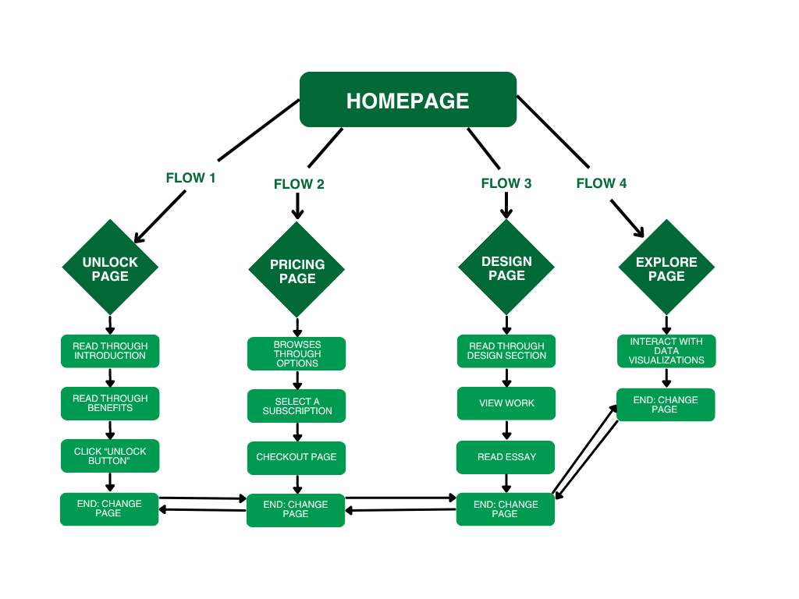

Design Process
Information Structure

- Home page: On the home page the user has the ability to use the navigation menu to naviagte through the website and to other pages. The user is presented with a headline and intoduction. As they continue scrolling down they are presented with a quote by the CEO, to create a sense of friendliness and approachability to the website. Further down, are the objectives and goals of the business to give users an idea of what the business is all about and what it stands for. Lastly, there is a section for users to see the partners involved in the business, giving the business/ website more credibility.
- Unlock page: On the unlock page, the user has access to the navigation menu. They are presented with information about fruits and their advantages. The user is also presented with a list of 10 benefits for including fruits in their diet. Lastly, there is a "Call- To-Action" button that prompts the user to view the diet plans the business offers.
- Pricing page: On the pricing page, the user also has access to the navigation menu. The user is presented with three diet plan options, where they can select their desired diet plan to view more information about it. As they press the respective diet plan button they will be redirected to the respective diet plan page where they'll see what the plan includes, the price and other additionals. From there the user is able to proceed to payment by pressing the neccessary buttons.
- Design page: On the design page, the user still has access to the navigation menu. The user is presented with the design choices and decisons of the website's content, aesethic and other design elements. The user can see the wireframes, style guide, user flow and more. The user is also presented with an essay button that will redirect them to the essays page where they can view and read the essay.
- Explore page: On the explore page, the user still has access to the navigation menu. The user is presented with two interactive data visualizations namely: a bubble diagram and a scatterplot. They can engage with these visualizations using tooltips, legends, buttons and dropdown menus, exploring data centered around fruits and their benefits.
User FLow
User's Goals(The Main actions or goals users might have on the site)
- Flow 1(Learn about the benefits of fruits): the user will go through the website reading the advantages and affordances for including fruits in their diet.
- Flow 2(View plans and subscribe to a diet plan): the user is able to select their prefered plan and also read through its information, the user will also reach the checkout page for payment.
- Flow 3(View the design process of the website): the user will be able to see the design choices and processes that were present in making the website, there are also able to read the Assignmen 2 essay.
- Flow 4(View and engage with data visualizations): the user here is able to interact with the data visualization.
Part 2
Reflection
I searched for many different APIs to use for my website and spent hours trying to understand what live APIs meant. I initially assumed that 'live' meant APIs that updated daily, which led me to find fewer free online APIs, as many were restricted and only allowed limited data access. The lecturer clarified what was meant by 'live' APIs and I eventually found a GitHub repository with a list of public APIs, where I discovered the one I wanted to use in the food section, specifically focused on fruits.
The API includes properties and characteristics of fruits, such as fat, protein, sugar, and more. I decided to create a fruit subscription website that combines health with convenience. Drawing inspiration from the data-driven insights of the API, I aimed to build a platform that educates and also encourages healthy living through fruit consumption. I realized I could tell a compelling story about the health benefits of different fruit groups. My goal is to offer a seamless and enjoyable experience where users can access valuable information and engage with content, such as recipes, fitness tips, and coaching making healthy choices simple, and accessible.
Resources
To achieve the clean, modern aesthetic I envisioned for the website, I spent time browsing royalty-free image websites, specifically searching for high quality fruit images. Most of the images I selected were sourced from the Freepik website, which offered multiple collections of images that aligned with my design goals. To further refine the look and ensure consistency with my branding, I edited the chosen images with Photoshop. Adjusting colours, enhancing details, and overlaying custom text. For example, on the "UNLOCK" page, I added the headline "Explore the Health Benefits of Fruits!" to create a visually striking yet informative element that invites users to dive deeper into the content. These edits helped to improve the overall presentation, ensuring the imagery was both engaging and aligned with the website’s goal of promoting healthy living through fruit consumption.
Code
For some of the functions and styling on the website, there were crucial elements, such as the navigation bar, that I used. I also added new features, like a slight resize effect when hovering over certain cards, dynamically added buttons, dynamically added images, and a background color change when hovering over a button. I encountered some problems with implementing my code, so I looked through the MDN documentation, Stack Overflow, ChatGPT, and other websites to help me figure out the issues I was facing.
With regards to the payment page, I ran out of time to create a local storage solution for the text fields, but I intended to store that information in local storage whenever users fill in their details. I excluded the card fields because, since this is not an official website, I cannot protect and secure users' card details. Additionally, I wanted to add error messages for when there are incomplete fields.
Challenges
The first challenge I faced was finding a suitable API. I had to look through numerous APIs, each with different pricing. Many of which lacked clear and straightforward documentation. This made the selection process more time-consuming. Another issue was with the navigation bar. I reused code from a previous project, but the script failed to work because the file path was too long, it was buried within multiple folders, causing the ‘root’ directory issue. Additionally, working with D3.js presented some difficulties. Although the syntax was a bit complex to grasp initially, the examples we covered in class made it easier to implement certain features.
When I began the process of making the data visualization, I had issues with Fetching the data from the API, I kept getting the CORS error that didn't allow me to the fetch data. I tried getting assistance from AI and it provided me with a temporary proxy, which allowed me to bypass the error but only temporarily. I knew this way would not work as it would not be visible on GitHub. After seeking assistance from the lecturer, I was advised to install the Chrome Extension called "Allow CORS: Access-Control-Allow-Origin" on the Chrome Web Store. This extension removed the CORS error which helped me make progress with my data visualizations.
Data Visualization 1: Bubble Diagram
The API I used for this assignment is from FruityVice.com, which provides data about fruits, categorized into family, order, genus, calories, fat, sugar, carbohydrates, and protein. Each data category has varying values.
For the first data visualization, I chose to create a bubble diagram. My goal was to help users determine which fruits to consume for their desired weight goals, whether for weight gain or weight loss, by focusing on the categories of calories and protein. I wanted the visualization to highlight the versatility of fruits and how they can be used for both types of goals.
The diagram allows users to separate the fruits into two categories. A tooltip feature displays the values and names associated with each bubble, helping users view and understand the data at their convenience. Another interactive element I added is a dropdown menu, which enables users to filter fruits by family, giving them insight into which fruit families are most effective and popular within the selected categories. The colors in the diagram are based on calorie values: the lightest shades represent the lowest calories, and the color darkens as the calorie count increases.
The reason I chose this data visualization is that a bubble diagram was ideal for comparing fruits visually by using separation, well in this case the D3 force element. It allows the data to be presented in a visually appealing and intuitive way. It also enabled me to handle the large dataset effectively by representing different dimensions through bubble size, color, and position, providing a clear overview of complex information. The interactive elements, such as tooltips and dropdown menus, enhanced user engagement and allowed for deeper exploration of the data. Unlike bar or pie charts, a bubble diagram visually represents ranges of values, making it easier to compare data across different fruits.
Overall, this data visualization helps users explore and understand the nutritional content of different fruits, particularly in the context of weight management.
Data Visualization 2: Scatter Plot
The API had multiple categories I could use, and I wanted to highlight a new aspect of that data. I decided to use a scatter plot to represent it. Fruits contain sugar, which provides energy to our bodies, and carbohydrates also contribute to energy. I needed a way to present these two datasets together, so I used a scatter plot, placing carbohydrates on the y-axis and sugar on the x-axis. The bubbles were positioned based on their values for carbohydrates and sugar, helping users determine which fruits provide the most energy and which provide the least.
For interactivity, I included a tooltip that displays the fruit's name along with its carbohydrate and sugar values. Additionally, I added filter buttons that allow users to view fruits with high or low sugar and high or low carbohydrates.
Although I wanted to add animations to make the scatter plot more visually appealing, I ran out of time. The colors in this visualization are determined by the sugar levels of the fruits. In hindsight, I think I could have improved the visualization by adding grid lines to help users more clearly see the exact values represented by the bubbles on the graph.